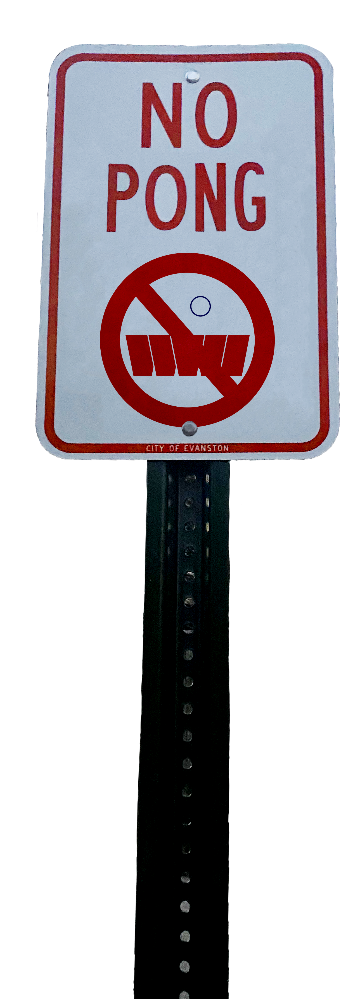

Imagine it’s June 2022: Doja Cat is the
headliner for Dillo Day, the sun is shining brightly, everyone you know
is vaccinated for COVID-19 and social distancing restrictions are
finally lifted permanently.You’re on your way to your first darty,
fitted up and ready for a day of fun.Nothing can bring you down— until
you arrive at the off-campus house. You hear no music, and the lively
crowd you expected is not there.
Everyone is inside. You find yourself heading down into the overflowing,
unfinished basement, knocking your head against an exposed pipe. There
is hardly room to stand. You and your friends can’t even find the
alcohol. No one is enjoying themselves. You wonder why no one is
utilizing the plentiful space outdoors, the luscious green grass and
clean Spring Quarter air. Then, you remember 1st Ward Alderman Judy
Fiske’s diabolical plan to ruin fun: Beer pong and all other outdoor
drinking games are prohibited in Evanston.
Playing drinking games outside is nothing new, but it has served as a
perfect COVID-safe(ish) activity during these unprecedented times (is
that a triggering phrase?). Off-campus students are more frequently
utilizing their outdoor spaces to bask in the few moments of joy that
are found in 2021 and maybe enjoy a few Coronas (without the virus part,
hopefully). Consequently, Evanston residents, in a very old man-ish,
“get these kids off my lawn” kind of way, are begging for some “peace
and quiet” on the streets of the 1st Ward, according to an article by
The Daily Northwestern. From this comes Fiske’s proposed “beer pong
ban.”
In a Human Services Committee Meeting in November, Fiske suggested
modeling the ban after the municipal code in Belmar, New Jersey. Belmar
City Council passed an ordinance in the summer of 2005, stating the game
exposed unconsenting neighbors to “foul language,rowdy and disorderly
behavior and to examples of the consumption of alcohol under
circumstances that are detrimental,” according to a 2008 article by TIME
Magazine. Unlike Evanston, Belmar is not a college town(although with
the recent closure of Burger King and literally nothing to do,it might
be a stretch to refer to Evanston as a college town), but it attracts an
influx of younger visitors every summer due to its coastal location.
While the ordinance in Belmar is still in place today, it faces backlash
from the younger demographic it targets. Fiske’s proposed ban is
receiving similar ridicule from Northwestern students — both for its
content and incredibly misleading name.

Sarah Johnson, a member of Northwestern’s Ultimate Frisbee Team, says
her biggest frustration with the ban is the way Fiske has presented it
as looking out for Northwestern students and the community, rather than
targeting off-campus residences like the Frisbee house for how they act
on their private property. This past fall, the Frisbee house, located at
the intersection of daytime and drinking (or in other words, Foster and
Sherman), received word from their landlord of neighbors complaining
about the unsightly view of their beer die table being left out in their
front lawn. When they heard about Fiske’s beer pong ban proposal, the
residents of the Frisbee house felt targeted.
“They need to own up to the fact that it’s all for aesthetic reasoning
rather than claiming it’s to help university students,” Johnson says.
Johnson and Will Sadowski, another member of the Northwestern Ultimate
Frisbee Team, also find the ban’s title misleading. Both assert that the
Frisbee house regularly played games of beer die, not beer pong, on
their front lawn this past summer.
“It’s a lot different. It’s a lot more fun and diverse,” Sadowski says.
It’s true. Beer pong and beer die are dramatically different games,
based on the beer pong rules on Bpong.com, a very reputable source for
all drinking game-related information. The ban proposal has not yet been
passed, but according to an email from Fiske, conversations between
Associated Student Government and Fiske are in progress to form
standardized regulations regarding drinking off- campus. If the proposal
passes, at least Northwestern students can still sleep well at night,
knowing we will always have the slightly more lame but
Northwestern-invented indoor drinking game of Caps to fall back on (and
that Judy Fiske is a boomer who doesn’t know the difference between beer
pong and beer die).